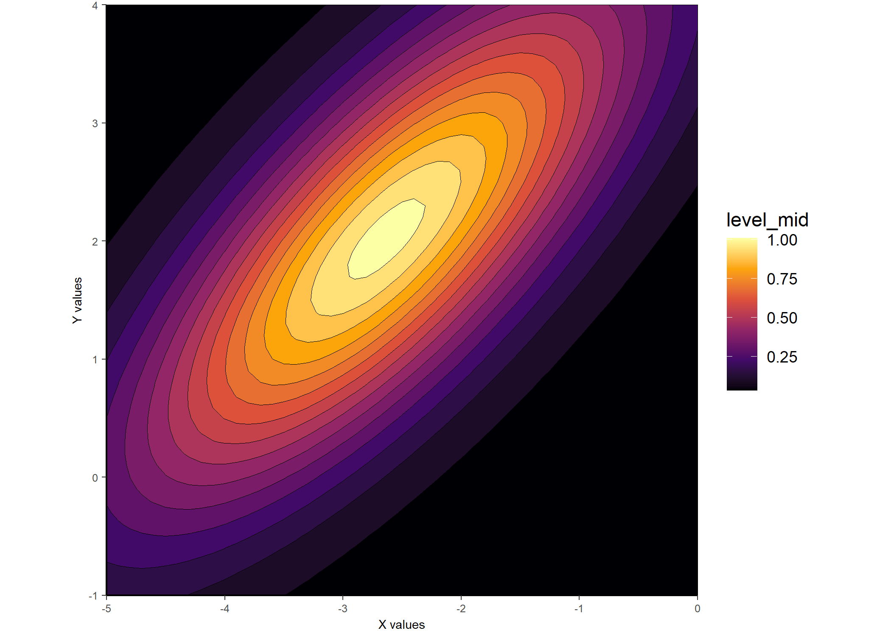

gaussplotR provides functions to fit two-dimensional Gaussian functions, predict values from such functions, and produce plots of predicted data.
Installation
You can install gaussplotR from CRAN via:
install.packages("gaussplotR")
Or to get the latest (developmental) version through github, use:
devtools::install_github("vbaliga/gaussplotR")
Example
The function fit_gaussian_2D() uses stats::nls() to find the best-fitting parameters of a 2D Gaussian fit to supplied data.
The predict_gaussian_2D() function can then be used to predict values from the Gaussian over a supplied grid of x- and y-values (generated here via expand.grid). This is useful if the original data is relatively sparse and interpolation of values is desired.
Plotting can then be achieved via ggplot_gaussian_2D(), but note that the data.frame created by predict_gaussian_2D() can be supplied to other plotting frameworks such as lattice::levelplot().
library(gaussplotR) ## Load the sample data set data(gaussplot_sample_data) ## The raw data we'd like to use are in columns 1:3 samp_dat <- gaussplot_sample_data[,1:3] #### Example 1: Unconstrained elliptical #### ## This fits an unconstrained elliptical by default gauss_fit_ue <- fit_gaussian_2D(samp_dat) ## Generate a grid of x- and y- values on which to predict grid <- expand.grid(X_values = seq(from = -5, to = 0, by = 0.1), Y_values = seq(from = -1, to = 4, by = 0.1)) ## Predict the values using predict_gaussian_2D gauss_data_ue <- predict_gaussian_2D( fit_object = gauss_fit_ue, X_values = grid$X_values, Y_values = grid$Y_values, ) ## Plot via ggplot2 and metR library(ggplot2); library(metR) ggplot_gaussian_2D(gauss_data_ue)

## And another example plot via lattice::levelplot() library(lattice) lattice::levelplot( predicted_values ~ X_values * Y_values, data = gauss_data_ue, col.regions = colorRampPalette( c("white", "blue") )(100), asp = 1 )

#### Example 2: Constrained elliptical_log #### ## This fits a constrained elliptical, as in Priebe et al. 2003 gauss_fit_cel <- fit_gaussian_2D( samp_dat, method = "elliptical_log", orientation_strategy = -1 ) ## Generate a grid of x- and y- values on which to predict grid <- expand.grid(X_values = seq(from = -5, to = 0, by = 0.1), Y_values = seq(from = -1, to = 4, by = 0.1)) ## Predict the values using predict_gaussian_2D gauss_data_cel <- predict_gaussian_2D( fit_object = gauss_fit_cel, X_values = grid$X_values, Y_values = grid$Y_values, ) ## Plot via ggplot2 and metR ggplot_gaussian_2D(gauss_data_cel)

Citation
Baliga, VB. 2020. gaussplotR: Fit, predict, and plot 2D gaussians in R. figshare. Software. https://doi.org/10.6084/m9.figshare.12980717